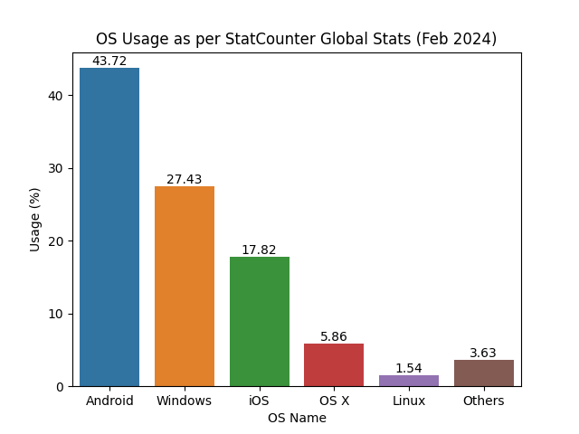
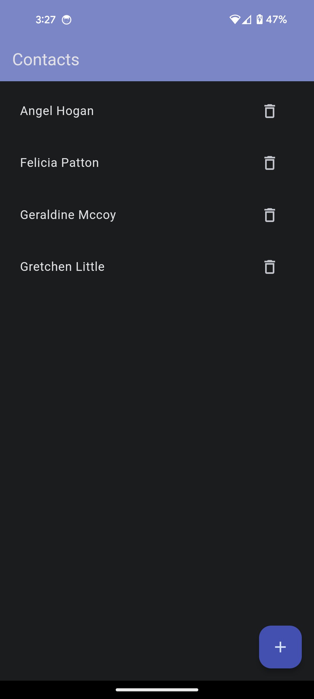
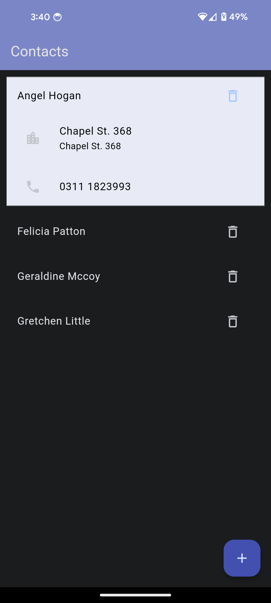
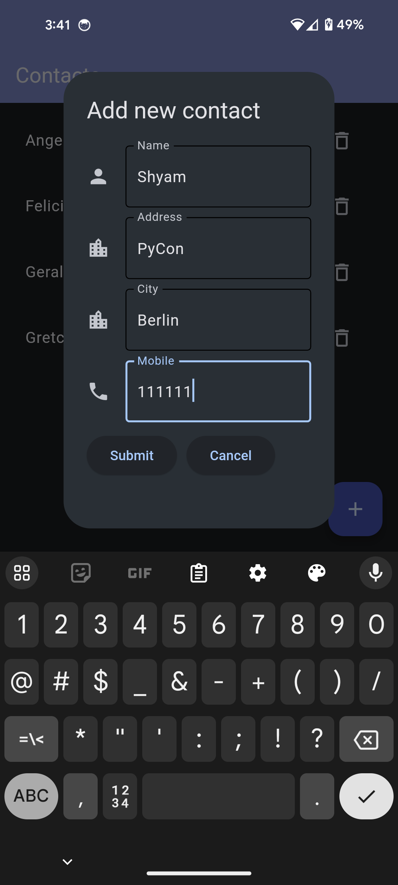
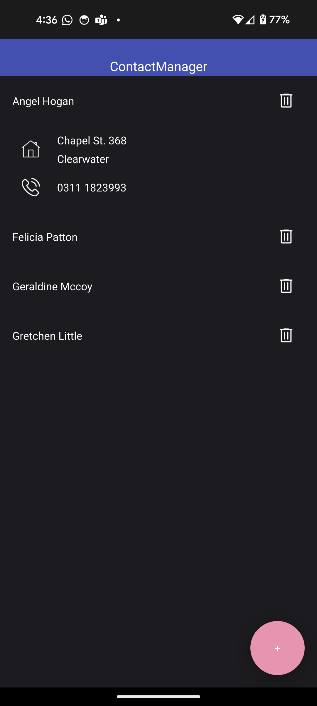
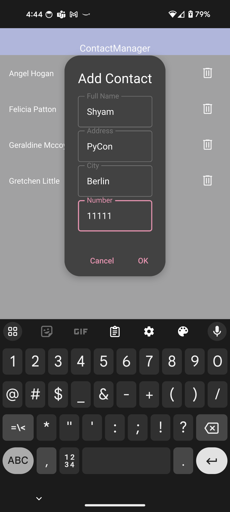
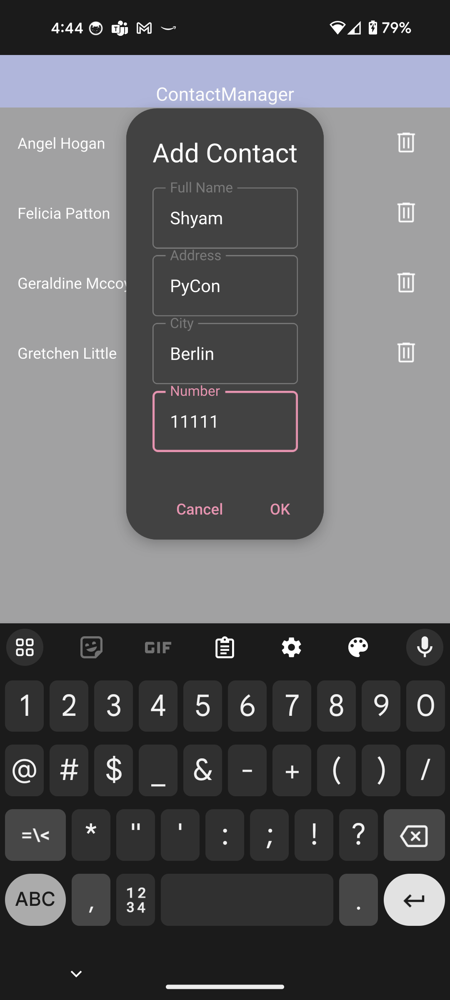
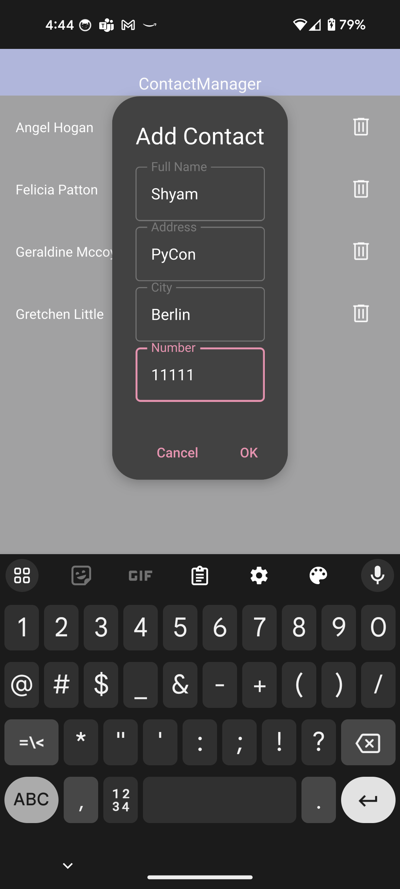
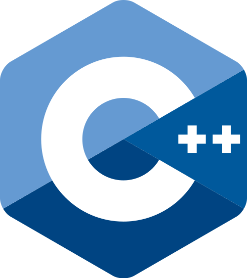

Deploying your Python application to Android
Shyamnath Premnadh


Hi, there 👋
Shyamnath Premnadh aka Shyam
Qt for Python
Senior Software Engineer @ TQtc


Why is Android an important platform ?🦾
Is Python a good alternative for Android development? 🤔
Currently, NO
But, why? 🤷♂️
Python 🚫 Android
- No official support for Android in CPython
- No native support for Python with Android SDK
- The app should bundle the Python binaries
Python 🚫 Android
- No official support for Android in CPython
- No native support for Python with Android SDK
- The app should bundle the Python binaries
But ....
Python 🫶 Android
- No official support for Android in CPython -
PEP 738: Adding Android as a supported platform - Malcolmn Smith - No native support for Python with Android SDK - Toga, PySide6, PyQt6
- The app should bundle the Python binaries
GUI frameworks with Android support
- Kivy
- Flet
- PySide6
- PyQt6
- Toga
Comparsion with an example
- Kivy
- Flet
- PySide6
- PyQt6
- Toga
Contact Manager Application
- Concise understanding of User Interaction
- Simple Data Model
- Event Handling
- Navigation and Layout
Flet
- Server-Driven UI framework based on Flutter
- Minimal API - Fully in Python
- Deploying as a web app on the browser or a progressive web app (PWA)
- Super active and responsive community - Discord, Github Discussions, Mailing list etc
- Apache-2.0 license
Contact Manager Application - Flet



API
- Easy to use
class AddContact(UserControl): ... def build(self): self.name = TextField(label="Name", icon=icons.PERSON) self.address = TextField(label="Address", icon=icons.LOCATION_CITY) self.city = TextField(label="City", icon=icons.LOCATION_CITY) self.mobile = TextField(label="Mobile", icon=icons.PHONE) submit_button = ElevatedButton(text="Submit", on_click=self.add_contact) cancel_button = ElevatedButton(text="Cancel", on_click=self.close_dlg) self.submit_cancel_button = Row([submit_button, cancel_button]) return Column([self.name, self.address, self.city, self.mobile, self.submit_cancel_button]) ... add_dialog = ft.AlertDialog(modal=True, title=ft.Text("Add new contact"), content=AddContact(contacts_dict)) def add_pressed(e): page.dialog = add_dialog add_dialog.open = True page.update() page.floating_action_button = FloatingActionButton(icon=ft.icons.ADD, on_click=add_pressed)
How to deploy?
- Prerequisites - Flutter SDK
- Run the command
flet build apk/aab
apk (Android Application Package)- Packaging format
aab (Android App Bundle)- Publishing format
PySide6
- Official bindings for the Qt framework (since 1995 😮)
-
Two ways to create GUIs
- Qt Widgets - Python and C++
- Qt Quick - QML and Python/C++
- Interactive tool to create designs
- Qt Widgets - Qt Designer
- Qt Quick - Qt Design Studio
- Native feel and look
- Community Editon(LGPLv3/GPLv3) and Commercial Edition
Contact Manager Application - PySide

 


API
- More features and years of community support
ColumnLayout { id: grid ... TextField { id: fullName focus: true Layout.fillWidth: true Layout.minimumWidth: grid.minimumInputSize Layout.alignment: Qt.AlignLeft | Qt.AlignBaseline placeholderText: qsTr("Full Name") } TextField { id: address Layout.fillWidth: true Layout.minimumWidth: grid.minimumInputSize Layout.alignment: Qt.AlignLeft | Qt.AlignBaseline placeholderText: qsTr("Address") } ... } Dialog { id: dialog function createContact() { form.fullName.clear(); ... dialog.title = qsTr("Add Contact"); dialog.open(); } contentItem: ContactForm { id: form} } RoundButton { text: qsTr("+") highlighted: true anchors.margins: 10 anchors.right: parent.right anchors.bottom: parent.bottom onClicked: { currentContact = -1 contactDialog.createContact() } }
Role of Python?
Loading QML files from Python
if __name__ == '__main__':
app = QGuiApplication(sys.argv)
engine = QQmlApplicationEngine()
engine.addImportPath(Path(__file__).parent)
engine.loadFromModule("Contact", "ContactList") #loads ContactList.qml
if not engine.rootObjects():
sys.exit(-1)
ex = app.exec()
del engine
sys.exit(ex)
Using Python object in QML
contactmodel.py
QML_IMPORT_NAME = "Backend"
QML_IMPORT_MAJOR_VERSION = 1
@QmlElement
class ContactModel(QAbstractListModel):
...
contactview.qml
import Backend
ListView {
id: listView
....
model: ContactModel {
id: contactModel
}
....
}
How to deploy?
- Prerequisites
- Built custom Android wheels (Soon to go away)
- buildozer and python-for-android (kivy)
- Main entry point is `main.py`
pyside6-android-deploy --wheels-pydie=`path-to-android-wheel` --wheel-shiboken=`path-to-android-wheel`
Kivy
- Popular since 2012
- Easy to get started with
- Two ways to create GUI
- Python code
- Kv language
- More suited for games than tradional applications
- MIT license
- Community - Discord, Stackoverflow, Reddit, Github Issue Tracker
Contact Manager Application - PySide
API
Using Kivy and KivyMD
<.MainWindow>:
MDBoxLayout:
orientation: 'vertical'
....
# Creating the Float button
FloatButton:
text: '+'
markup: True
background_color: 1, 0, 1, 0
Role of Python?
Loading QML files from Python
How to deploy?
- Prerequisites
- Built custom Android wheels (Soon to go away)
- buildozer and python-for-android (kivy)
- Main entry point is `main.py`
pyside6-android-deploy --wheels-pydie=`path-to-android-wheel` --wheel-shiboken=`path-to-android-wheel`
Python Packages Support
Pure Python Packages - Platform Independent
Package Support
Pure Python Packages - Platform Independent
What about Native Python Packages?
Package Support
What about Native Python Packages?
How C++ and Python can strive together
Shyamnath Premnadh
